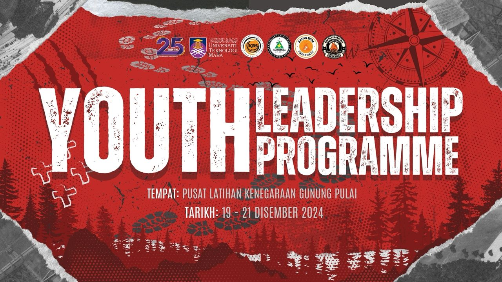
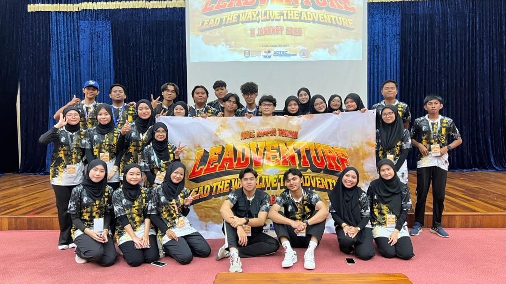
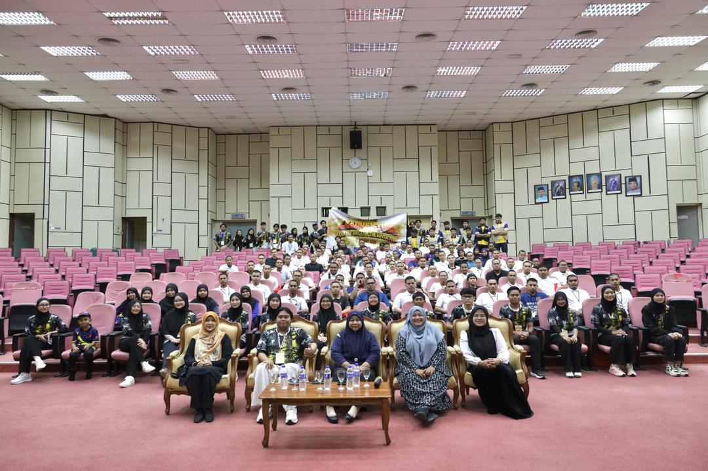

Professional Experience
December 2024

Head of Multimedia — Youth Leadership Programme
Universiti Teknologi MARA (UiTM) – Sekretariat Rakan Muda UiTMJ, Johor
Contributed to the Youth Leadership Programme, a student development initiative organized by Sekretariat Rakan Muda UiTMJ aimed at strengthening leadership skills, teamwork, and communication among university students.
- Led the Multimedia Committee in planning and executing all visual and digital content for the programme, ensuring consistent branding and professional presentation throughout the event.
- Designed and produced key promotional and programme materials including official banners, posters, and programme shirts to enhance visual identity and participant engagement.
- Produced highlight montage videos capturing key activities, leadership modules, and participant involvement for documentation and promotional use.
- Collaborated closely with programme organizers and various committees to ensure multimedia outputs aligned with the event's objectives, schedule, and branding requirements.
- Managed timelines to ensure all creative assets were delivered punctually while maintaining quality standards.

Promotional Banners & Branding
Program Closure Video
Youth Leadership Team
28 July 2025 – 19 September 2025


Pegawai Pentadbiran (Administrative Officer) — Internship Trainee
Institut Kemahiran Belia Negara (IKBN) Bandar Penawar
- Developed and maintained the IKBN Library System including database configuration, hosting migration, and interface improvement.
- Classified and imported more than 800 library materials into the digital system using the Dewey Decimal Classification.
- Produced the IKBN digital bulletin “Pena Penawar” and prepared design drafts for supervisor and director review.
- Assisted with administrative and technical duties such as device setup, Google Meet preparation, and library material organization.
- Developed an AI-based photography analysis system and website for the Innovation Program using Claude AI.
- Captured event photography and videography for official IKBN programmes including the Independence Day marching event.
Library System
Digitized materials
Event photo
October 2025 – January 2026
Project Leader & Head of Multimedia — Outreach Program: LEADventure
Universiti Teknologi MARA (UiTM) – LEADventure Program, KABESA Segamat, Unit Kaunseling UiTM & ADTEC JTM Kampus Tangkak
Led the LEADventure Outreach Program, a collaborative leadership and information management initiative engaging 80 student leaders in a structured one-day development module focused on leadership, communication, and Information Management fundamentals.
- Directed the overall creative direction and visual branding of the program, ensuring consistent identity across promotional materials, presentation decks, digital banners, and official posters.
- Produced and supervised multimedia content including the official program montage, video presentations, and event documentation for reporting and archival purposes.
- Designed educational infographics and simplified training materials to make Information Management concepts accessible and engaging for youth participants.
- Coordinated technical and audio-visual setup for live presentations throughout the 12-hour program, ensuring smooth module transitions and uninterrupted execution.
- Collaborated with cross-functional committees including Secretary and Treasury to manage multimedia logistics and budget allocation within set timelines.

Program Banners & Teams
Program Closure Video

Program Photography Session
December 2025

Event Crew • Backstage Manager • Multimedia Handler • Jury Assistant
Open Championship Chess Event — Universiti Teknologi MARA (UiTM) – Sekretariat Rakan Muda, JSP UiTM, Unit Sukan UiTM, & Segamat Chess Association
- Managed backstage operations including player flow, table setup, tournament sequencing, and overall coordination across all 7 rounds.
- Handled multimedia duties by capturing photography, videography, and visual assets used for promotion and official event updates.
- Served as Jury Assistant, responsible for accurately keying in and verifying all 7 rounds of match results into the official chess system.
- Updated the official tournament website with match pairings, player points, rankings, and tiebreak outcomes while maintaining strict data accuracy.
- Managed contestant profiles and score validations using system manager tools to ensure final results were error-free before release.
- Collaborated with Sekretariat Rakan Muda, JSP, Unit Sukan UiTM, and Segamat Chess Association on logistics, technical coordination, and event execution.
- Provided direct support to participants, guiding them on schedules, scoring updates, and competition procedures.
Stage / Setup
Match
Results entry
Leadership Experience
March 2024 - August 2024
Project Leader - Computer System Operation
Final Year Project - UiTM Segamat, Johor
Directed a comprehensive end-to-end computer lab network project, demonstrating strong leadership and technical management skills:
- Led team in designing and implementing computer lab setup including network architecture, hardware selection, and ergonomic layout
- Coordinated multidisciplinary team collaboration, delegating tasks based on strengths and facilitating effective communication
- Managed technical analysis and budget optimization to maximize value within constraints
- Produced and presented professional documentation including technical specs, floor plans, and safety protocols to faculty